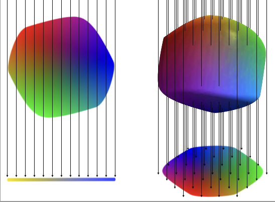
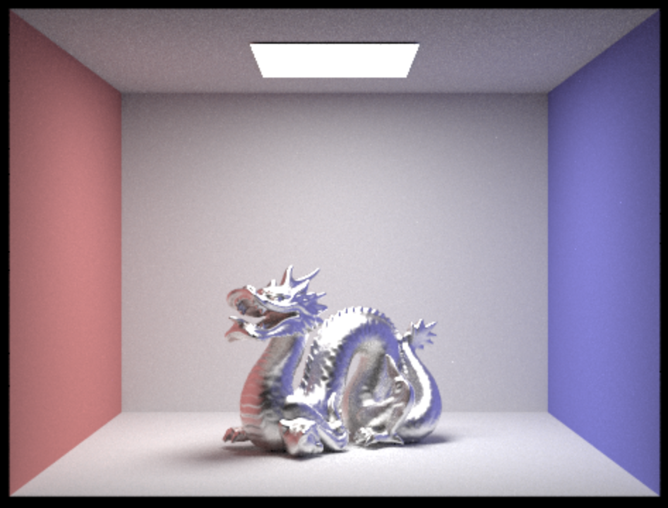

Graphics
Theory of Human Tetrachromatic Color Experience  - ACM SIGGRAPH Paper, 2024.
Raytracing I
 - C++ Raytracing Engine.
- C++ Raytracing Engine.
Raytracing II  - Additional materials for the Raytracing Engine.
3D Mesh Engine
 - C++/OpenGL engine for rendering 3D meshes.
- C++/OpenGL engine for rendering 3D meshes.
Auto-stitching Mosaics
 - Stitching photos together via keypoints and warping.
- Stitching photos together via keypoints and warping.
Tour into the Picture
 - Creating animations/3D scene models from a single image.
- Creating animations/3D scene models from a single image.